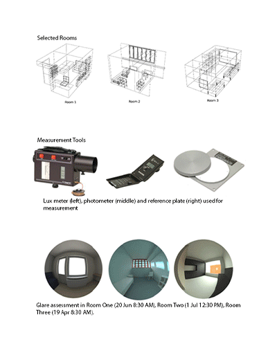
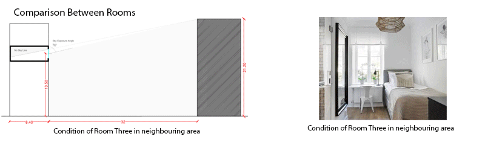
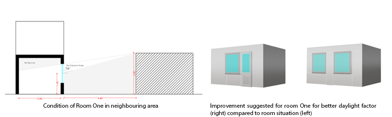
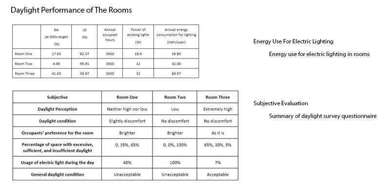

DAYLIGHTING SPRING'25
Does a room "feel" well-lit the way the standards say it should? We tested that against three real home offices we were already working from. Each of us modelled our own study space — one in Lund at ground level, one on the second floor in Lund, one on the fifth floor in Malmö — combining hand-held lux meter and photometer readings with ClimateStudio simulations of daylight factor, climate-based daylight, glare and electric lighting energy.
Room 2 got the full physical work-up: a 0.5 m grid of illuminance readings, surface reflectance measured against a reference plate, and window transmittance measured directly, so its simulation could be validated against reality before trusting the same modelling approach on the other two rooms.

ROOMS & MEASUREMENT METHOD
Three rectangular rooms, three different conditions: Room 1 is a 12 m² ground-floor space in Lund with two northeast-facing windows; Room 2 is an 11.2 m² second-floor room in Lund with a single east-facing window; Room 3 is a 28 m² fifth-floor room in Malmö with both a southeast and a smaller northwest window. Two Hagner EC1 lux meters, a photometer and a reference plate were used to measure illuminance, surface reflectance and window transmittance under an overcast sky — the standard reference condition for daylight factor.

DAYLIGHT PERFORMANCE
Room 2's measured and simulated daylight factor means were close — 0.29% measured versus 0.30% simulated — but that headline agreement hid bigger gaps at individual grid points nearer the window. Chasing that gap down led to the window transmittance measurement itself: it implied a glass transmissivity of only about 13%, unusually low, and became a source of investigation in its own right. Across all three rooms and all four illuminance thresholds tested (100, 300, 500, 750 lux), none met the EN 17037 recommendation of 300 lux over 50% of the floor area for 50% of daylight hours — Room 3, the most daylit room, came closest but still fell short.
GLARE & ELECTRIC LIGHTING
Simulated glare probability (sDGP) came out at 0%, 3.6% and 22.8% for Rooms One, Two and Three — Room Three's large, unobstructed east-facing glazing put it solidly in "disturbing glare" territory at certain times of day, while Room One's smaller, more obstructed window kept it essentially glare-free. Ironically, Room Three also used the most energy on electric lighting of the three despite being the best-daylit room, because fixture wattage and layout there simply outweighed the daylight it was getting.
COMPARISON & IMPROVEMENT

Room 1's daylight was uneven across the floor plate, worst in the corner furthest from the window — occupant feedback confirmed electric lighting became necessary there even during the day. Widening the window, or splitting it into two openings to spread light penetration further into the room, was the improvement explored for that layout.
TAKEAWAYS
- Point-level variances reveal average blind spots. A close match on mean daylight factor (0.29% measured vs 0.30% simulated) can still hide real disagreement at individual sensor points near apertures[cite: 9].
- Regional skies constrain daylight autonomy targets. None of the three home offices satisfied the EN 17037 recommendation under overcast Nordic conditions, underscoring baseline climate constraints[cite: 9].
- High daylight autonomy does not guarantee low energy use. Room Three had the highest daylight availability yet consumed the most lighting energy due to fixture densities and layout arrangements[cite: 9].
- Unshaded glazing shifts daylight into disturbing glare. Room Three’s oversized glazing resulted in 22.8% glare probability, demonstrating that natural light expansion requires integrated solar shading[cite: 9].
- Field baseline data demands sanity validation. Erroneous readings (such as an artifactual 277.61% ceiling reflectance caused by reference plate alignment) must be filtered prior to simulation entry[cite: 9].
